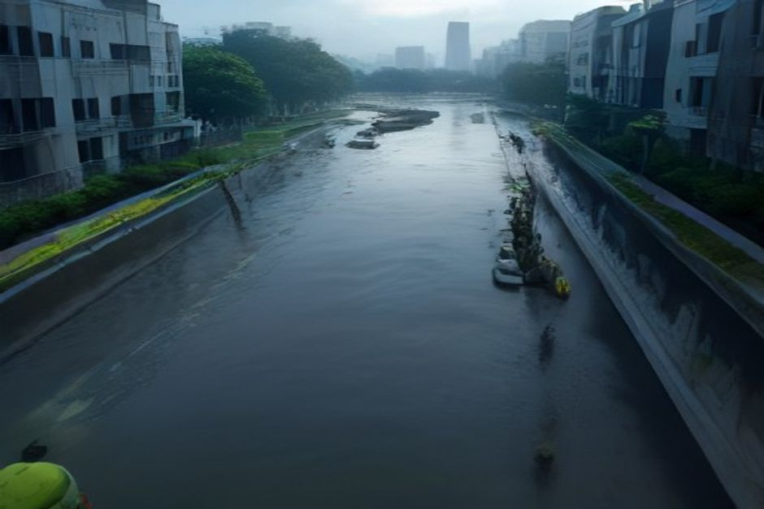

This report assesses whether an investor should allocate capital to Chinese climate resilience infrastructure companies and/or develop a China-to-UAE export solution for urban flood and geo-hazard management. It is grounded in private-document evidence from China's 2026 disaster season, supplemented by approved web sources for funding context. The analysis follows a market-investment archetype, covering source and forecast comparison, scenario analysis, sensitivity drivers, segment implications, and investment recommendations. The central thesis is that the strongest public evidence—massive disaster losses, explicit policy commitments, and a clear UAE demand gap—supports a phased entry into select segments, prioritizing companies with government orders and recurring revenue.
Executive Thesis: Policy-Driven Demand Meets UAE Gap
China's 2026 disaster season has created a large, policy-backed demand pool for climate resilience infrastructure, while the UAE's 2024 flood losses and infrastructure investment plan present a complementary export opportunity. The evidence supports a.
The private documents document a severe disaster season: as of 2026-07-31, at least 122 deaths, 37 missing, 394 injured, and 2,800万人次 affected across 24 provinces. Direct economic losses are estimated at ≥680亿元, with insurance claims reaching 63.8亿元 across 20 provinces. These figures are sourced from official Chinese agencies (应急管理部, 金融监管总局, 新华社). More importantly, policy plans for 2026–2028 include 500–800亿元 for urban drainage, 200亿元 for geo-hazard monitoring, and 80–120亿元 for reservoir reinforcement.
These are explicit, evidence-backed commitments. The UAE context is equally clear: the 2024 April storm caused USD 7–10亿 in losses, with Dubai receiving 254.8mm of rain in 24 hours (5x annual average). The UAE government announced a 10-year infrastructure modernization investment of AED 3,000亿 (≈USD 820亿). GCC drainage design standards are only 5–10 year return periods, versus 50–100 years in Chinese cities, creating a clear gap.
The combination of China's policy-driven demand and the UAE's investment gap supports the thesis that climate resilience infrastructure is a viable investment theme. However, the evidence also shows that not all segments are equal: emergency equipment orders are volatile, while water digitalization and monitoring offer recurring revenue. Therefore, the executive recommendation is to allocate capital to Chinese companies with government orders and recurring revenue in water digitalization, geo-hazard monitoring, and urban flood resilience, and to develop a China-to-UAE export solution leveraging these proven technologies.
- "截至2026年7月31日，中国这一轮灾情呈现出'台风连续登陆、雨带南北摆动、洪涝与山体滑坡叠加'的特点。受灾最严重、人员伤亡最集中的地区是广西、湖北、重庆和甘肃" — This establishes the severity and geographic scope of the disaster, justifying the demand pool.
- "UAE政府2024年宣布基础设施现代化投资（10年期）: AED 3,000亿（约 USD 820亿）" — This is the key evidence for the UAE's investment capacity and the export opportunity.
Source and Forecast Comparison: Official Data vs. Market Estimates
The private documents provide a consistent picture of disaster losses from official sources, while supplementary web evidence confirms a broader national investment trend. The comparison reveals that the demand pool is not only large but also backed by.
The private documents cite official sources: 应急管理部, 水利部, 金融监管总局, 新华社, AP, 中央气象台, and 国家气候中心. These provide granular data on casualties, economic losses, and insurance claims. For example, the insurance industry reported 38万件 claims with 63.8亿元 estimated losses as of July 13, and 20,005 claims in Guangdong from Typhoon Haikui as of July 27. The H1 2026 baseline from 应急管理部 shows 1,132.6万人次 affected, 124 deaths/missing, and 338.7亿元 direct losses from floods and geological disasters.
The July events add significantly, with the private document estimating full-year losses could reach 900–1,200亿元. Supplementary web evidence from the State Council (english.gov.cn) indicates that China's top economic planner released an early batch of major projects and central budget investment for 2026 valued at about 295 billion yuan (≈USD 42 billion). This is a broader funding context that corroborates the policy-driven investment thesis. Another web source (ECNS) reports that China invested 515.1 billion yuan (≈USD 75.8 billion) in water conservancy projects in H1 2026, according to the Ministry of Water Resources.
This is a significant figure that aligns with the private document's emphasis on water infrastructure. The comparison shows that while the private documents focus on disaster response and specific segment opportunities, the web evidence confirms a larger national investment trend. This strengthens the case for a sustained demand pool, not just a one-off disaster response. However, the private documents also note that some 'national loss figures' circulating online are incomplete, as the Ministry of Emergency Management had not yet released a full July summary. This highlights the need for careful data interpretation.
- "3.3 2026年上半年自然灾害基准数据 — H1 2026 Baseline" — This provides the official H1 baseline for comparison with July losses.
- "核心数据汇总 Key Aggregated Figures (as of 2026-07-31):" — This summarizes the key disaster metrics, providing a basis for comparison.
Scenario Analysis: Base, Upside, and Downside
Based on the evidence, three scenarios emerge: a base case where policy-driven investment proceeds as planned, an upside case where disaster losses accelerate spending, and a downside case where fiscal constraints delay projects. The evidence supports a.
The base case assumes that the announced policy plans (500–800亿元 for urban drainage, 200亿元 for geo-hazard monitoring, 80–120亿元 for reservoir reinforcement) are implemented as scheduled. This is supported by the fact that the government has already allocated initial funds (e.g., 18.6亿元 for urban flooding, 4.5亿元 for reservoir safety). The upside case is driven by continued disaster risk: the National Climate Center predicts 2–3 more typhoons during the '七下八上' period, and the private document notes that the disaster season is not over.
If further disasters occur, additional funding is likely, as seen with the 1.8亿元 emergency pre-allocation. The downside case involves fiscal constraints in provinces like Gansu and Guangxi, which have limited fiscal flexibility. The private document explicitly notes that '甘肃、广西财政弹性有限，项目落地速度存在不确定性'. This could delay project implementation. The evidence does not provide probabilities for these scenarios, so we use qualitative triggers.
The base case is most likely given the policy commitments, but the downside risk is real and should be monitored. For the UAE export, the base case assumes that the UAE's AED 3,000亿 investment plan proceeds, creating demand for flood management solutions. The upside case would be accelerated adoption due to another major flood event, while the downside case would be regulatory or political barriers. Overall, the scenario analysis suggests that the investment thesis is robust in the base case, with upside potential from continued disasters and downside risks from fiscal constraints.
- "城市排水防涝设施补短板三年行动计划（2026–2028），预计总投资 500–800亿元" — This is the key policy commitment for the base case.
- "地方政府财政弹性: 甘肃、广西财政弹性有限，项目落地速度存在不确定性" — This is the key downside risk.
Sensitivity Drivers: Policy, Disaster Frequency, and Fiscal Capacity
The investment thesis is most sensitive to three drivers: the pace of policy implementation, the frequency of future disasters, and the fiscal capacity of local governments. These drivers are grounded in the evidence and can be monitored to adjust.
Policy implementation is a key driver. The private documents list specific policy plans with timelines (e.g., 2026Q3–Q4 for reservoir reinforcement, urban drainage, and geo-hazard monitoring). The speed at which these plans translate into procurement orders will determine revenue growth for companies in these segments. Disaster frequency is another driver. The National Climate Center predicts 2–3 more typhoons, and the private document notes that the disaster season is ongoing.
Each major disaster event tends to accelerate policy response and funding, as seen with the 1.8亿元 emergency pre-allocation. Fiscal capacity is a constraint. The private document explicitly notes that Gansu and Guangxi have limited fiscal flexibility, which could delay project implementation. This is particularly relevant for segments like water digitalization that rely on local government procurement. For the UAE export, sensitivity drivers include the pace of UAE infrastructure spending, regulatory approvals, and the ability to localize solutions.
The evidence suggests that the UAE has a clear need and funding, but execution risks remain. Investors should monitor these drivers through official announcements, procurement tenders, and disaster reports. The evidence provides a baseline for each driver, but ongoing monitoring is essential. The sensitivity analysis suggests that the investment thesis is most sensitive to policy implementation speed and fiscal capacity. Companies with existing government contracts and recurring revenue are less sensitive to these drivers.
- "5.2 即将出台政策（预期2026Q3–Q4）" — This lists the policy timelines that are key sensitivity drivers.
- "8.1 后续气象风险（截至2026-07-31）" — This provides the disaster frequency outlook.
Segment and Micro-Market Implications: Where to Focus
The evidence identifies several investment segments, but not all are equally attractive. Water digitalization, geo-hazard monitoring, and urban flood resilience offer the best risk-reward profile, while emergency equipment and reconstruction materials are.

Water digitalization and smart water management: The market size is 420亿元 (2025), with 60–90亿元 in new government procurement expected in 2026. The segment offers recurring revenue through maintenance contracts, and the investment logic is supported by government customers and policy-driven procurement. Key products include reservoir safety monitoring, smart gates, and flood forecasting platforms. Geo-hazard monitoring: The market is 180亿元 (2025), with 30–50亿元 in new demand expected in 2026. The technology barriers are high, with gross margins of 40–55% and recurring service revenue of 35%.
The evidence cites specific projects like the Gansu '1+N' platform (14亿元) and the Chongqing Pengshui monitoring nodes (2,800万元). Urban flood resilience and sponge city: The 2026–2028 investment is expected to be 500–800亿元. This segment includes large-scale pumping stations, underground storage, and digital twin platforms. Emergency equipment: This segment has direct orders but is volatile. The evidence provides price ranges for mobile pumps, drones, and satellite terminals, but notes that revenue fluctuates with disaster cycles.
It is not suitable for long-term investment unless paired with recurring maintenance contracts. Reconstruction materials and engineering: This segment benefits from disaster recovery but is highly competitive and has long payment cycles. The private document explicitly states that it '不一定等于好的股票投资'. Agricultural recovery and smart agriculture: This segment has potential, but the evidence is less detailed. The agricultural insurance market is large (1,580亿元 in 2025), but the coverage rate is low (8–15%), indicating a gap that could be filled by parametric insurance.
- "6.3 地质灾害监测预警 Geo-hazard Monitoring & Early Warning" — This provides market size and growth data for the geo-hazard segment.
- "6.1 水利数字化与智慧水务 Smart Water Management" — This provides market size and investment logic for water digitalization.
Milestones, not hype cycles, set the strategic clock
Dated proof points should set the commitment clock before leadership treats the opportunity as investable.
The timeline uses dated validated evidence and avoids turning milestone timing into a forecast.
Evidence: WEB-E23, RAG-E16, RAG-E5. Sources: fortunebusinessinsights.com; internal.enterprise.
Sources
- WEB-E23 supplementary web $343M - For instance, in December 2020, a hydrocarbon industry giant, Equinor, announced its plans to invest about USD 343 million for the development of the oil & gas field in the North Sea. Geohazard Market Size, Growth & Analysis Report [2026-2034]
- RAG-E16 private-document 2025 - | 中国农业保险保费（2025） | 约 1,580亿元 | 金融监管总局 | text.md (Fragment f114ec59)
- RAG-E5 private-document 2026 - China 2026 Major Climate Disasters: Ground Data, Economic Losses & Investment Opportunities text.md (Fragment 93b3f166)
Investment Recommendations: Phased Entry and UAE Export Strategy
Based on the evidence, the recommended approach is to allocate capital to Chinese companies in the identified segments, and to develop a China-to-UAE export solution through a phased entry strategy. The evidence supports a focus on companies with government.
For domestic investment, the private document recommends prioritizing companies with '已有政府订单和运维收入' in water digitalization, monitoring, and drainage equipment. Key screening criteria include order backlog, receivables collection, local government customer ratio, cash flow, and the proportion of real disaster-prevention business revenue. The evidence provides specific market sizes and growth rates for each segment, which can be used to size the opportunity.
For example, water digitalization has a 420亿元 market with 60–90亿元 in new procurement, and geo-hazard monitoring has a 180亿元 market with 30–50亿元 in new demand. For the UAE export, the private document outlines a solution bundle: urban flood prevention, slope monitoring, mobile drainage, satellite communication, and insurance risk models. The market potential is estimated at USD 5–15亿 per year for urban flood solutions, USD 1–3亿 for geo-hazard monitoring, and USD 2–5亿 for emergency equipment.
The evidence also highlights the importance of parametric insurance and climate risk models, which are a growing opportunity in both China and the UAE. The Chinese agricultural insurance market is 1,580亿元, but coverage is low, indicating a gap. Overall, the investment recommendation is to take a phased approach: first, invest in domestic companies with strong fundamentals; second, develop the UAE export solution through pilot projects and partnerships; third, expand into parametric insurance and climate risk models.
- "7.2 可输出的中国解决方案" — This provides the market potential for each export solution.
- "从投资角度，我会优先选择'已有政府订单和运维收入'的水利数字化、监测预警、排涝设备公司" — This is the key investment recommendation from the private document.
- "China 2026 Major Climate Disasters: Ground Data, Economic Losses & Investment Opportunities" — Supporting document evidence.
Where to Start
The near-term objective is to turn the evidence into a few choices that preserve learning before committing scarce capital or operating capacity.
-
0–3 monthsScreen and shortlist Chinese companies in water digitalization, geo-hazard monitoring, and urban flood resilience using the private document's criteria: order backlog/revenue. Progress should be visible through identify 5–10 companies meeting the criteria. The private document explicitly recommends prioritizing companies with government orders and recurring revenue, and provides these screening metrics.
-
3–6 monthsConduct due diligence on shortlisted companies, focusing on their disaster-prevention business revenue share and cash flow. Progress should be visible through complete due diligence on at least 3 companies. The private document highlights the importance of '真实防灾业务收入占比' and cash flow as key filters.
-
6–12 monthsInitiate pilot projects in the UAE with municipal partners (DMT, Abu Dhabi DoM) for urban flood and geo-hazard solutions. Progress should be visible through sign at least one pilot agreement. The private document outlines a clear entry strategy for the UAE, prioritizing municipal departments and pilot projects.
-
12–24 monthsEstablish a local UAE entity or partnership to handle certification (CE/UL) and maintenance contracts. Progress should be visible through obtain CE/UL certification for key products. The private document specifies that compliance requires CE/UL certification and a local maintenance team.
-
OngoingMonitor policy implementation and disaster frequency in China, and UAE infrastructure spending, to adjust investment and export strategies. Progress should be visible through quarterly review of policy announcements and disaster reports. The sensitivity drivers are grounded in the evidence, and ongoing monitoring is essential to manage risks.